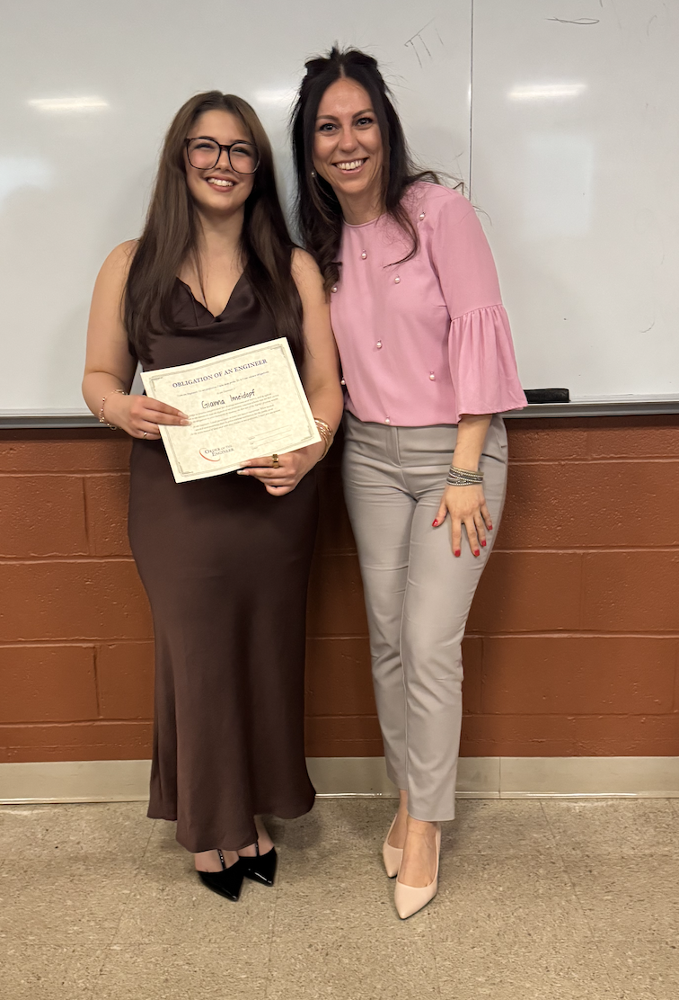
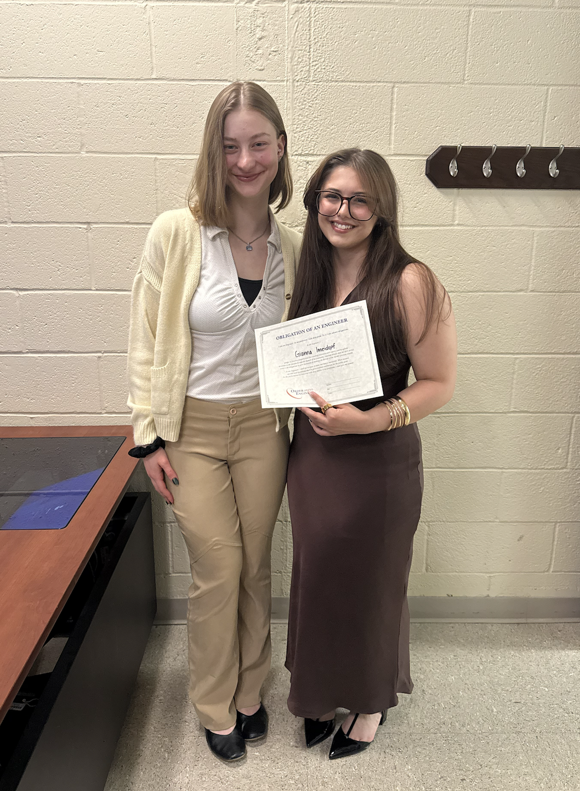
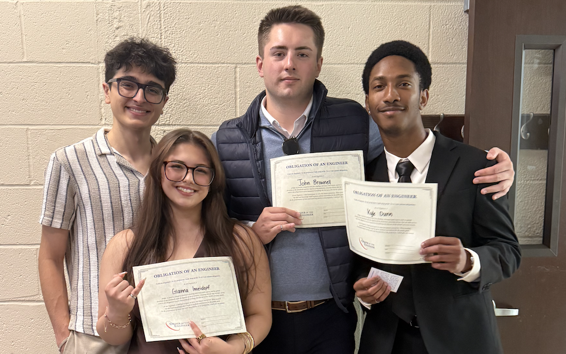
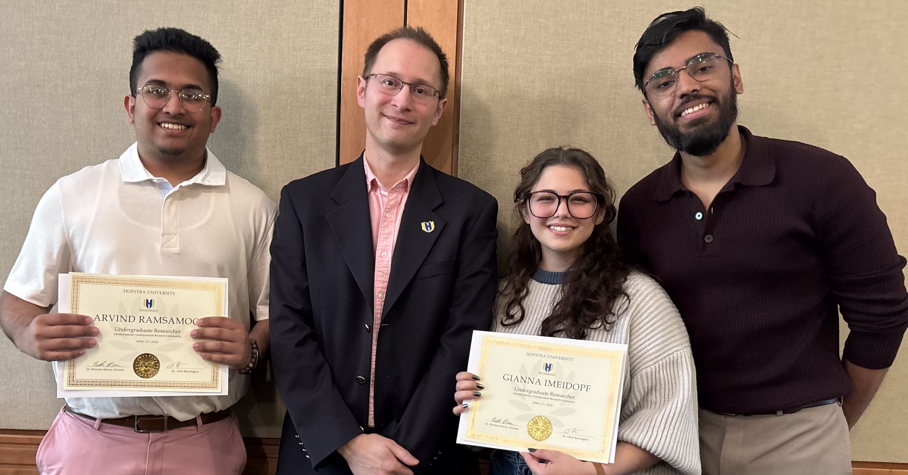
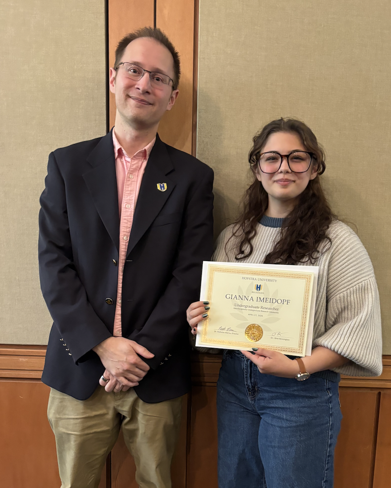
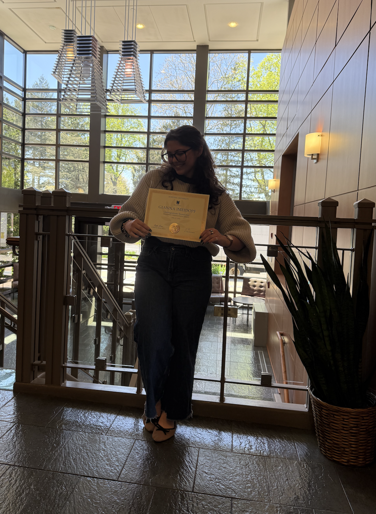

Office of Student Leadership and Engagement Awards
May 6, 2026
Hofstra hosted their annual Office of Student Leadership and Engagement award ceremony today, in which our BMES chapter received recognition for hosting this year's most Collaborative Program of the Year, our Impact Gala Fundraiser for the American Cancer Society.
Finally, I was personally awarded the "One Degree" award.
"The One Degree Award is given by the Division of Student Enrollment, Engagement, and Success and recognizes a student who has had a positive impact on the campus community through direct involvement, attitude, diligence, leadership, and influence. This award is given to a student whose commitment resulted in an organization or activity attaining a new level of achievement not possible without the student's participation."
It is such an honor to receive this recognition!
Engineering Ring Ceremony
May 4, 2026
Hofstra held an Engineering Ring Ceremony to induct their first class into the Order of the Engineer, and I am honored to have been a part of this class. This ring marked an important milestone for me as an engineering student and was excellent encouragement to continue forward to graduation in December!



Interdisciplinary Undergraduate Reasearch Competition Recognition
April 27, 2026
This week, Hofstra hosted their recognition luncheon for undergraduate researchers involved in the annual interdisciplinary research competition. It was a great honor to speak with so many committed research students from other fields, and meet other professors on our campus! I'm looking forward to learning from our IURC experience with the Feinstein Institute this summer.



Participation in the Third Annual Stony Brook Healthcare Innovation Challenge, Fifth Place
April 25, 2026
A team of my close friends and myself competed in an amazing hackathon hosted by Stony Brook University that was themed, innovations for patient rehabilition. Our group created BASS, Bowel Activity Sensing System, in an effort to help patients with chronic gastrointestinal issues to monitor their flares, and minimize their risks of episodes.
We competed against 31 other very strong teams, and walked away from the event with fifth place. We had a great time representing Hofstra at this event, and massive thanks to Stony Brook University for hosting!
Welcome to my page! I made this blog portion of my site to share fun and exciting, day-to-day adventures and projects. I hope you enjoy, and if you have any questions please send a message to my email!